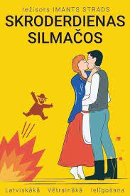

Galerija



Rūdolfa Blaumaņa luga
Darbība norisinās Silmaču saimniecībā pirms Jāņiem. Lugas centrā ir mīlestības attiecības, pārpratumi un komiskas situācijas.
Notikumu gaitā veidojas vairāki pāri, un beigās viss atrisinās laimīgi. Šī luga ir viena no populārākajām latviešu komēdijām.
📖 Sižets: Rūdolfa Blaumaņa luga “Skroderdienas Silmačos” ir jautra un dzīvīga komēdija par mīlestību, pārpratumiem un cilvēku attiecībām, kuras darbība norisinās Silmaču mājās īsi pirms Jāņiem. Silmaču saimniecībā valda rosība — tiek gatavoti svētki, un ierodas skroderi, lai šūtu drēbes. Vienlaikus sākas dažādas mīlas intrigas un pārpratumi. Vairāki personāži cenšas noskaidrot savas jūtas, bet bieži vien rodas greizsirdība, maldi un komiskas situācijas. Svarīga loma ir attiecībām starp Antonu, Elīnu un citiem tēliem, kuri iesaistās sarežģītās un reizēm pat smieklīgās situācijās. Katrs cenšas atrast savu laimi, taču tas nenotiek bez šķēršļiem. Lugas gaitā pārpratumi pakāpeniski tiek atrisināti. Noslēgumā viss sakārtojas — izveidojas vairāki pāri, un Jāņu svētki tiek sagaidīti ar prieku, dziesmām un kopības sajūtu.
